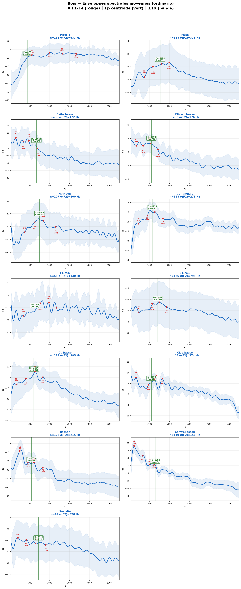
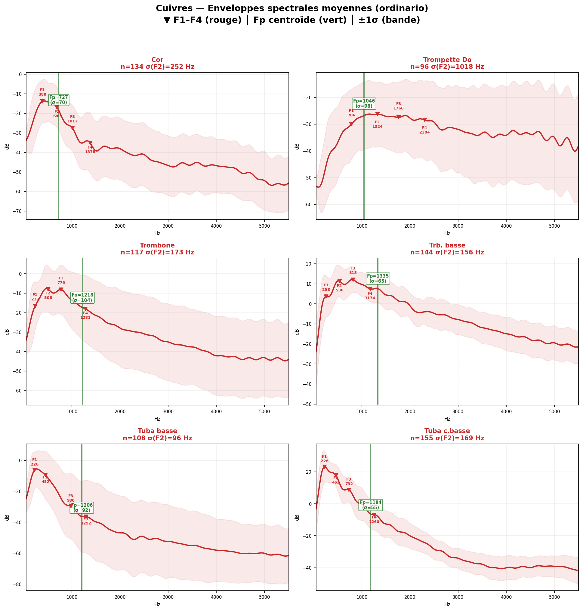
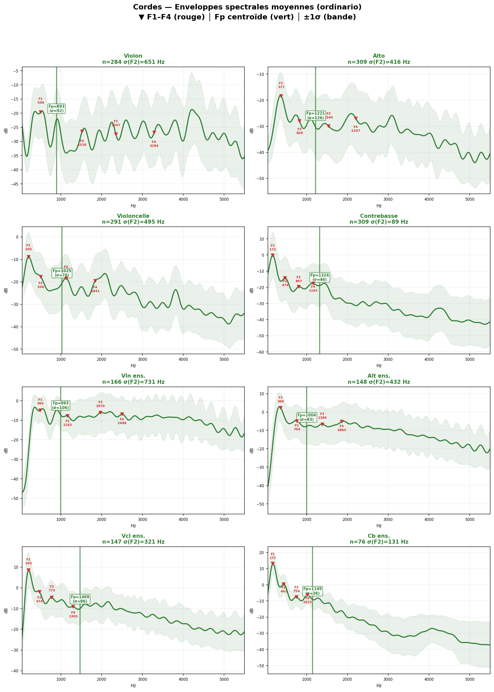

Ces planches regroupent les enveloppes spectrales moyennes calculées directement à partir des données specenv brutes. Les marqueurs rouges indiquent F1–F4, la ligne verte indique Fp et la bande colorée représente ±1σ.
Les bois montrent la plus grande diversité de profils d'enveloppe, du piccolo à la flûte contrebasse.
Instruments chargés : 13 / 13 — Échantillons : 1265

Les cuivres présentent des enveloppes plus concentrées, avec des zones d'énergie très lisibles dans le medium.
Instruments chargés : 6 / 6 — Échantillons : 754

Les cordes se distinguent par des plateaux spectraux et des résonances larges ; le repère Fp y est particulièrement utile.
Instruments chargés : 8 / 8 — Échantillons : 1730

Sources : exports specenv bruts SOL2020 + Yan_Adds-Divers.